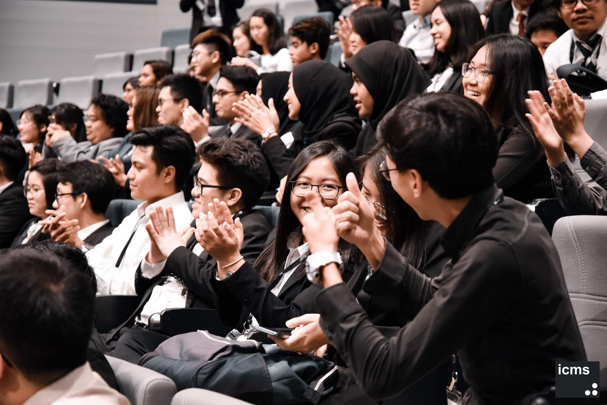
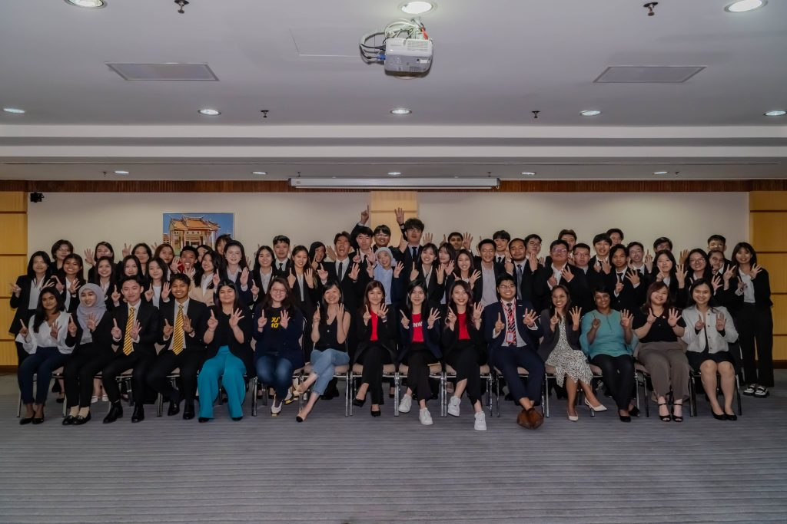
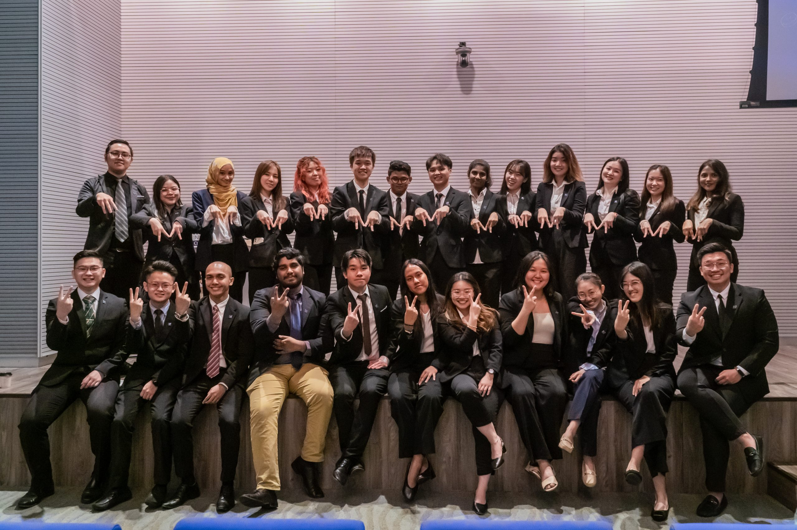

About ICMS
ICMS (International College of Management and Sports, formerly known as International College of Music and Cyberlynx International College) is a premier private higher education institution in Malaysia. Founded with a vision to provide specialized, industry-focused qualifications, ICMS has evolved to offer cutting-edge programs in Business Management, Hospitality, Sports Science, Information Technology, and Law Enforcement.
With accreditation from the Malaysian Qualifications Agency (MQA) and approval from the Ministry of Higher Education, ICMS blends practical skill development with academic rigor. The college fosters a vibrant learning environment, equipping domestic and international students with leadership capabilities, professional competencies, and real-world experience needed to excel in global markets.
Campus Life

ICMS Campus

Student Events

ICMS Scholars

Malaysian Scholars

ICMS Library
Campus & Facilities
ICMS provides state-of-the-art academic and recreational facilities designed to support holistic student growth. Located in the vibrant Mont Kiara area of Kuala Lumpur, the campus is surrounded by modern urban amenities, dining hubs, and transport links.
- Advanced Computer & IT Labs: Equipped with high-speed internet and modern software tools for digital technologies and software studies.
- Resource & Learning Center: Comprehensive physical and digital library resources for research and independent study.
- Modern Smart Classrooms: Interactive lecture halls and seminar rooms tailored for collaborative learning.
- Sports & Training Facilities: Dedicated sports management resources, fitness equipment, and training spaces for student-athletes.
- Hospitality & Practice Suites: Specialized training setups for business management and hospitality simulation.
- Student Lounge & Recreation Area: Vibrant spaces designed for socializing, project collaboration, and relaxation.